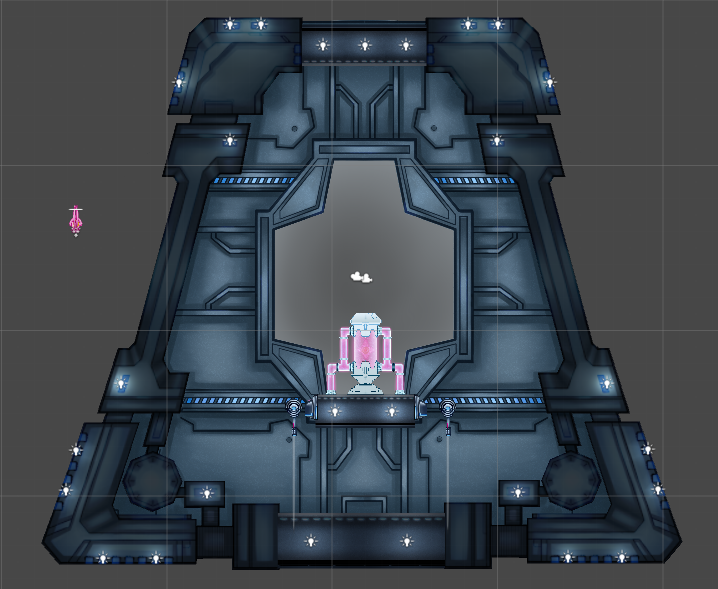
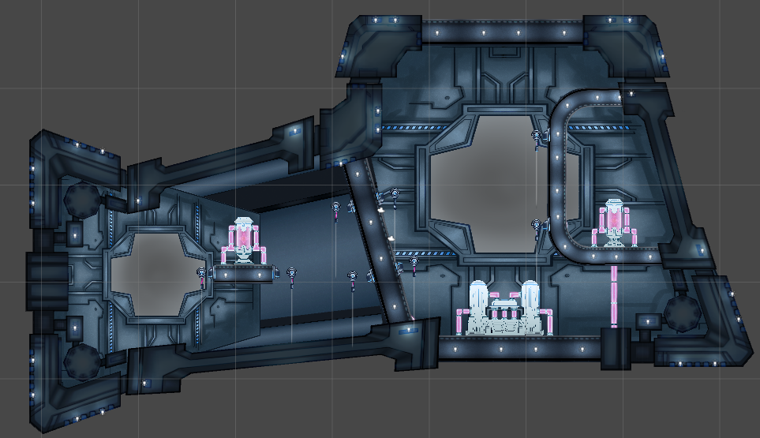
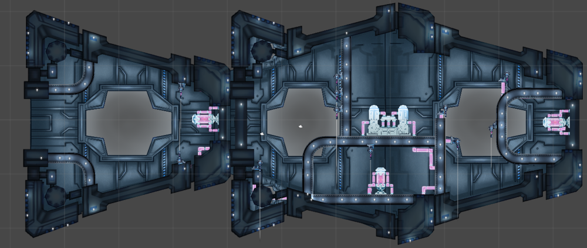
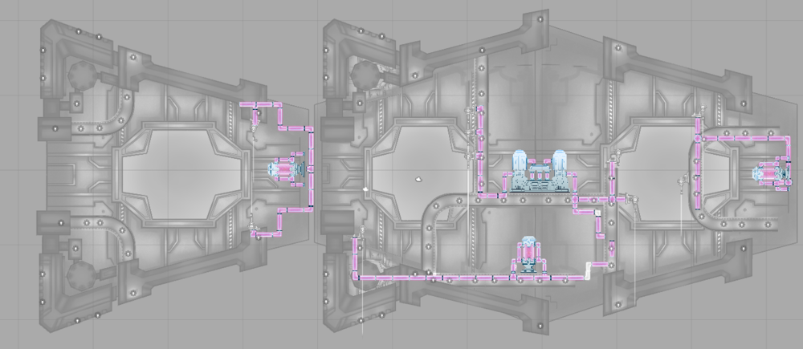
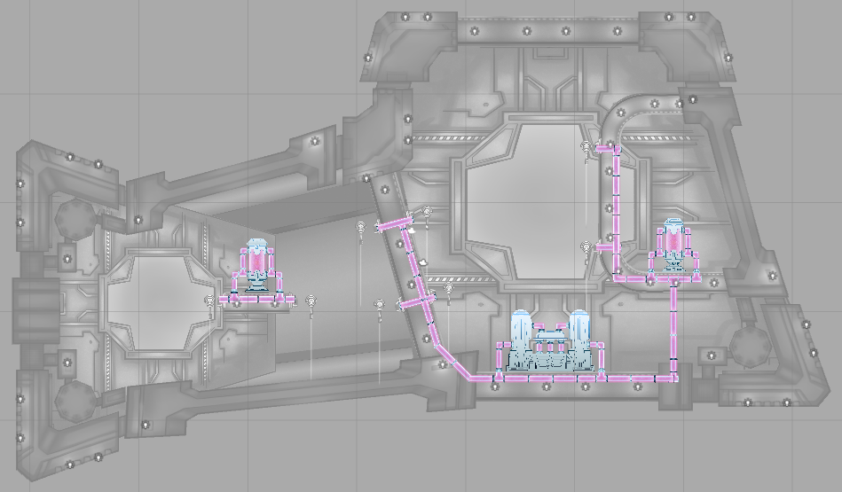

This week Tyler was refactoring the tentacles. This was a huge task and they ended up looking great. The downside was that it took up most of his time this week. I took the time to completely redo the first three levels with new art assets that Alana was able to get in last week. In addition, she was able to make energy tubes to represent the energy flowing through the ship. This was another reason to completely redo these early levels. I decided that these tubes might be good to use as Indestructable Walls. We knew that we wanted them in the game so that we can better define paths through levels and if they had a good use then even better.
1.0 "The Basics"
- 1 Starfish
- 2 Turrets
- No Gravity
Here the player should really be getting accustom to their abilities and learning how they interact with the ship.
Player also learns about the Self Destruction after all Starfish are saved.
1.1 "Whats Gravity?"
- 2 Starfish
- 8 Turrets
- Gravity Generator
In this ship, the player learns that there can be multiple Starfish in a level.
This is also the first time they encounter a Gravity Generator.
1.2 "The Approach"
- 3 Starfish
- 10 Turrets
- Gravity Generator
Although all previous ships had indestructible pipes, they never really hindered your destruction through a ship. In this level, energy actually blocks the way of the player and forces them to have to route differently and around through rooms. To get a better understanding, lets look at the piping of this ship.
Choosing to go straight for the second Starfish capsule puts the player against 3 turrets in a gravity filled area - not to their advantage. Instead, the player should wrap around and fight the Gravity Generator from the top to shut it off. This level shows the possibility of routing the player through the ship. Below you will find the layout for the second level.
Thanks for reading! Connect with us on Twitter, Facebook, or YouTube. To make sure you stay up to date, sign up for our email list!